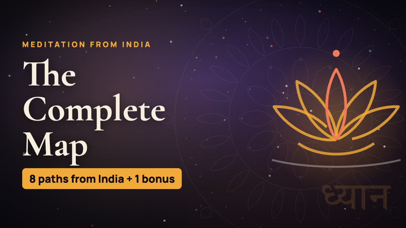

7:28Episode 00
The Complete Map — Meditation from India
Eight meditation paths from India — four charge nothing
YouTube title, description and chapters
Title
Meditation Techniques from India: The Complete Map (8 Paths + 1 Bonus)
Description
A calm, honest overview of eight meditation traditions from India, plus one clinical bonus: Isha Yoga, Art of Living, Heartfulness, Vipassana, Sahaja Yoga, Kriya Yoga (YSS), Brahma Kumaris, OSHO Active Meditations and Smriti Meditation. We cover why India, how guru-parampara carried these teachings, five checks for choosing a path, why nervous-system readiness matters before the cushion, and a side-by-side look at founders, start dates and costs. Grouped by living-guru status, never ranked: a map, not a verdict. This video summarises the guide at https://harsh.in/meditation-techniques-from-india/. All facts are as of June 2026. Fees and programs may change, so check each official site before you sign up. Which tradition are you drawn to? Tell us in the comments.
Chapters
- 0:00 Intro
- 0:19 Why India
- 1:06 A map, not a verdict
- 1:38 How to choose
- 2:35 Body first
- 3:26 At a glance
- 3:54 Part 1: Living guru
- 4:34 Part 2: Lineage & community
- 5:55 Bonus: Smriti
- 6:48 Before you go
Tags
meditation techniques from India, Indian meditation, types of meditation, Vipassana, Isha Yoga, Heartfulness, Art of Living, Sahaja Yoga, Kriya Yoga, Brahma Kumaris, OSHO meditation, Smriti Meditation, how to choose a meditation, free meditation India